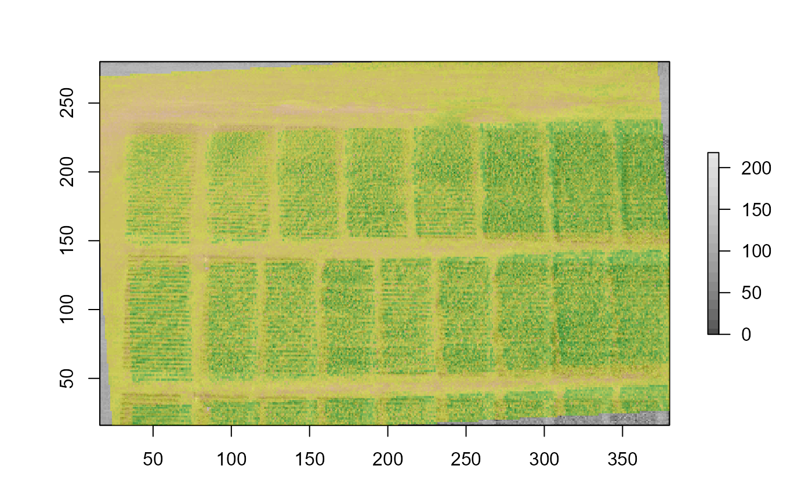

Affine transformations are of type \(f(x) = Ax + b\), where \(x\) is the spatial coordinates (2D in this case), \(A\) is a rotation matrix (it can also include scale/shear parameters, but only rotation is considered here), and \(b\) is the translation (xy shift) parameters.
affineBrick(Brick, angle = 0, xy_shift = c(0, 0))
| Brick | An object of class |
|---|---|
| angle | A numeric value of the angle (in degrees, 0-360) to rotate
|
| xy_shift | A numeric vector of length two with the x and y shift (the translation parameters). |
An object of the same class as the input Brick.
Affine transformation affects the image dimension.
p <- system.file('exdata', 'soybean.tif', package = 'hyperbrick') im <- brick(p) print(im) #> class : RasterBrick #> dimensions : 264, 364, 96096, 3 (nrow, ncol, ncell, nlayers) #> resolution : 1, 1 (x, y) #> extent : 16, 380, 16, 280 (xmin, xmax, ymin, ymax) #> crs : NA #> source : soybean.tif #> names : soybean.1, soybean.2, soybean.3 #> min values : 45.41772, 12.00000, 0.00000 #> max values : 236.4372, 239.0000, 218.0000 #> # view band-3 plot(im[[3]], col = gray.colors(20), asp = 0) # rotate band-3 at 3.5 degrees counter-clockwise b3_rot <- affineBrick(im[[3]], angle = 3.5) plot(b3_rot, add = TRUE, legend = FALSE, col = adjustcolor(terrain.colors(20), 0.5)) 